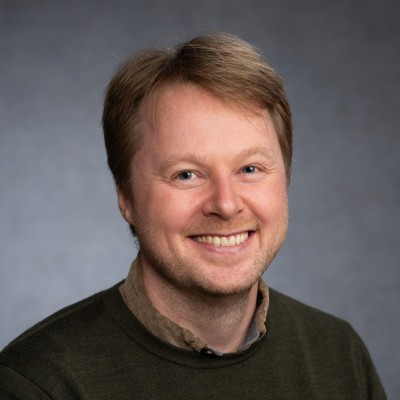

Frank Robert Barin. Photo: LinkedIn
Engineering students at SDU Sønderborg have a new point of contact this semester. Frank Robert Barin has taken up the role of programme coordinator, and has already introduced himself to the student members of the Education Committee.
“I hope to support your education as best as possible,” Frank wrote in his introduction to committee members. “I look forward to seeing you.”
Students who recognise the face of former programme coordinator Christina need not worry — she is not going far. Christina has moved into a senior advisory role, now overseeing the programme coordinators rather than serving as one. The promotion means she will still be a presence around campus.